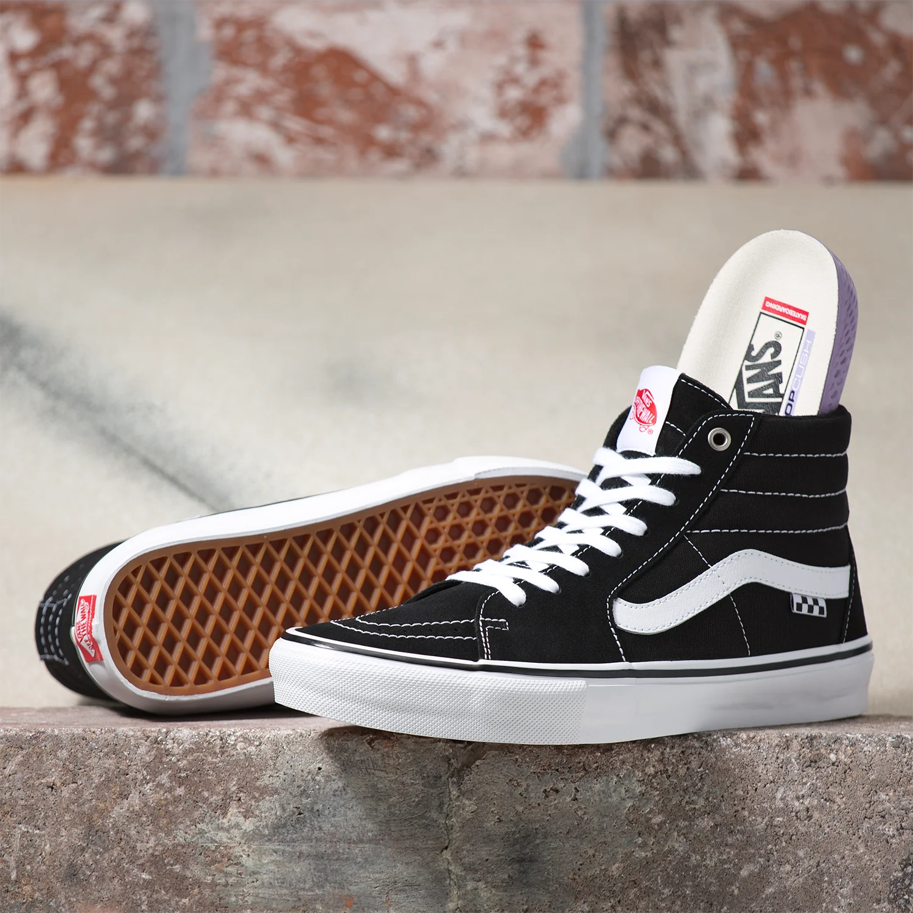
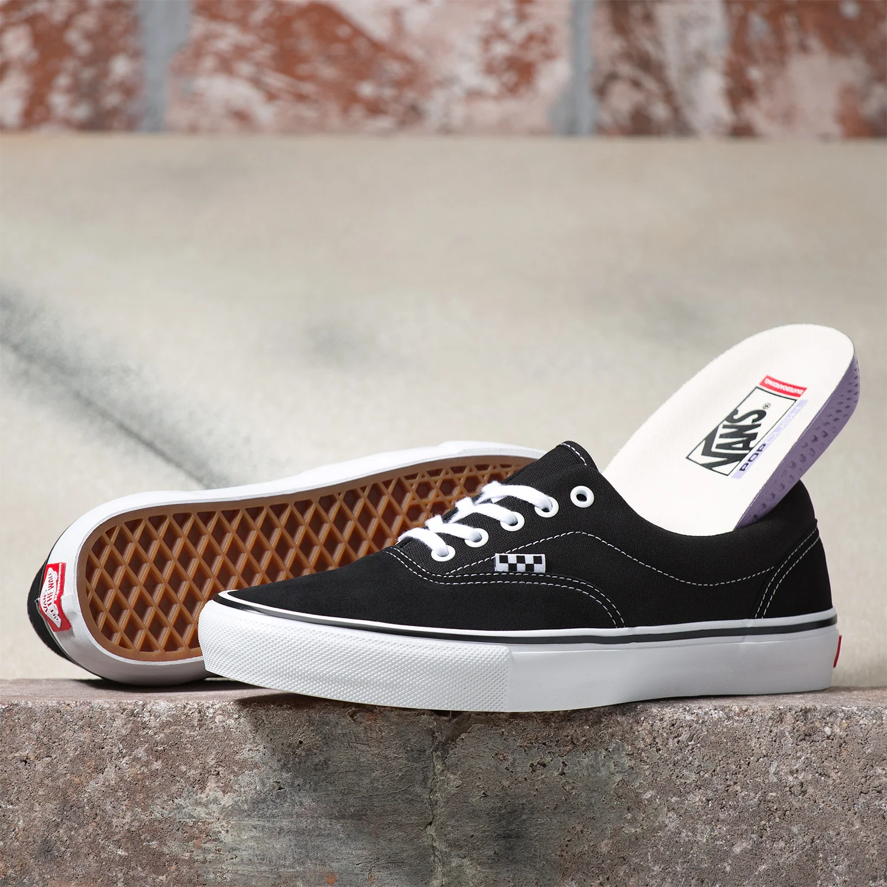

El modelo Old Skool, es un zapato clasico de skate y es el primer modelo en llevar la única franja lateral, su diseño de perfil bajo con amarre de pasadores cuenta con una parte superior de cuero y lona, con una lengueta y forro acolchados, además de la muy reconocida suela de goma con forma de Waffle.
VANS
VANS OLD SKOOL

VANS SK8
Las zapatillas Vans Skate Sk8-Hi mantienen el diseño de las zapatillas clásicas originales y añaden algunas mejoras. Con el desarrollo continuo de características para el skateboarding, las zapatillas están hechas para ser más duraderas y ofrecer una amortiguación mejorada, además de una protección superior para el pie y el tobillo.Las zapatillas Vans Skate Sk8-Hi incorporan capas inferiores de goma de refuerzo DURACAP™ en zonas que se desgastan mucho, lo que aumenta la longevidad de la zapatilla. El tejido Sockliner mejora la amortiguación para una experiencia más cómoda. Además, el aspecto clásico de la suela waffle viene mejorado con goma Pro Vulc Lite, para una sensación y un agarre a la tabla inigualables. Si compras Vans para patinar, las Vans Skate Sk8-Hi son tus zapatillas ideales: están diseñadas para rendir al máximo sobre la tabla.
Conocidas como «estilo 38» cuando se lanzaron originalmente en 1978, las Vans Sk8 llamaron la atención de inmediato al joven y creciente mundo skate. Diseñadas según las necesidades de los skaters, la protección de los tobillos y el agarre fueron toda una revelación dentro de la comunidad. La Sk8-Hi fue la segunda zapatilla en incorporar la llamativa raya lateral, y a medida que ganó popularidad, la «raya jazz» se convirtió en un símbolo reconocible al instante en este mundo..
VANS ERA
Las Vans New Era son una línea específica de zapatillas lanzada por Vans, que incorpora elementos de diseño y colaboraciones exclusivas. Esta línea surge de la asociación entre Vans y New Era, una reconocida marca de gorras y ropa urbana. La colaboración combina el diseño clásico y la funcionalidad de las zapatillas de skate de Vans con los toques modernos y de alta calidad de New Era. La historia de las Vans New Era se caracteriza por la fusión de los estilos icónicos de ambas marcas, resultando en productos únicos que destacan tanto en el ámbito del skateboarding como en el streetwear. Las zapatillas de esta línea suelen presentar detalles distintivos, como bordados especiales, etiquetas personalizadas y materiales premium, reflejando la influencia de New Era en el diseño.
Desde su lanzamiento, las Vans New Era han tenido un impacto significativo en la moda urbana, siendo muy apreciadas tanto por skaters como por entusiastas del estilo urbano. Las colaboraciones especiales dentro de esta línea han incluido a artistas y diseñadores influyentes, creando ediciones limitadas que se convierten en piezas de colección muy buscadas.
En resumen, las Vans New Era representan una exitosa colaboración entre dos marcas icónicas, combinando lo mejor de ambos mundos para crear una línea de zapatillas que celebra la herencia del skateboarding y la moda urbana.